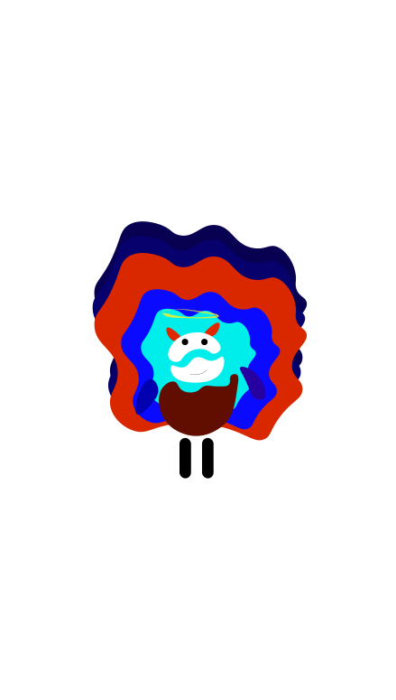
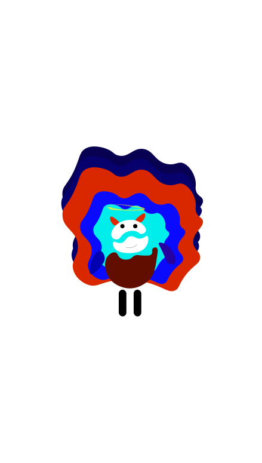

I am moody, I am a passionate self-taught programmer and ux/ui designer, I love a lot of things about technology and computer science so basically I am dedicated to experience any tech my ears encounter. I have a lot to offer when it comes to either programming or graphic designing. I love aesthetics, colors, music, and is art in general. basically, this is me.
 
